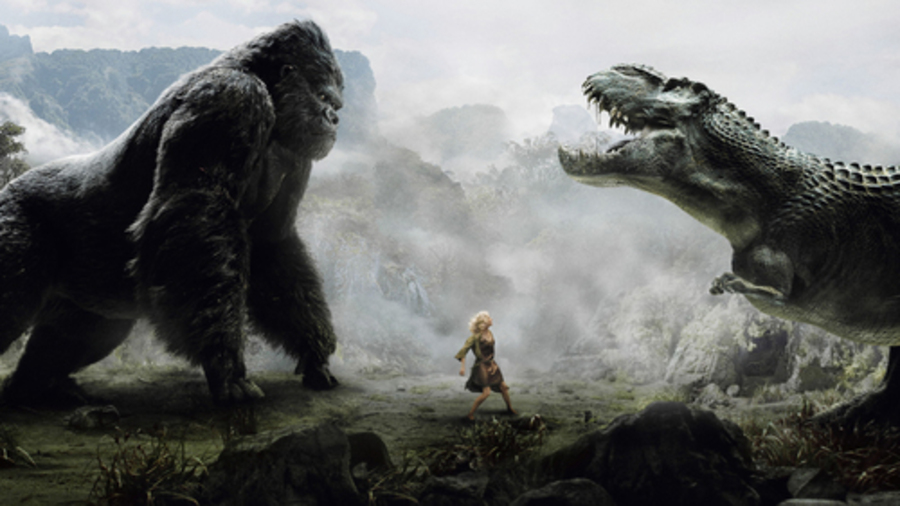

King Kong
King Kong
Inicio Filmografía Galería Extras
King Kong (1933) El hijo de King Kong King Kong vs Godzilla King Kong se escapa King Kong (1976) King Kong 2 El poderoso Kong King Kong 2005
La Leyenda
King Kong es el nombre de un gigantesco gorila ficticio que habita en la Isla Calavera, y que ha sido el protagonista de varias películas, además de haber aparecido en otros medios, como series de televisión, libros, videojuegos o cómics, habiéndose convertido por ello en uno de los iconos de la cultura popular moderna.
La película en la que este simio apareció por primera vez (King Kong, 1933) es una de las primeras y más famosas películas de monstruos.

King Kong
El Cine
Existen varias películas de King Kong:
1 King Kong (1933). La película clásica original, recordada por sus pioneros efectos especiales usando la técnica stop-motion, por sus animatronics y su historia de la Bella y la Bestia.
El hijo de Kong (1933). Una secuela estrenada el mismo año, que trata sobre el retorno de una expedición a Isla Calavera y el descubrimiento del hijo de Kong.
King Kong vs. Godzilla (1962). En esta película japonesa de los Estudios Toho, unos marineros encuentran en la Isla del Faro (ubicada cerca de Japón) un enorme gorila y deciden llevarlo a Japón para que acabe con Godzilla, un enorme dinosaurio mutante que se encuentra atemorizando a todo el país. En esta versión, el simio tenía la particularidad de ser más grande, alcanzando de esa forma la altura de Godzilla, y sus brazos conducían electricidad. Fue la primera película en color en la que aparecen tanto Kong como Godzilla.
King Kong se escapa (1967). Al igual que la anterior, es una película japonesa dirigida por Ishiro Honda.
King Kong (1976). Remake del productor Dino De Laurentiis, producido por la Paramount y dirigido por John Guillermin. Jessica Lange y Jeff Bridges lo protagonizaron. Tuvo un gran éxito comercial desde el momento de su estreno (no así de crítica), y ganó un Oscar por sus efectos especiales.King Kong 2 (King Kong lives) (1986). Producida por De Laurentiis Entertainment Group (DEG), la secuela de la versión de 1976 fue dirigida por el mismo director y protagonizada por Linda Hamilton. El argumento continúa en el punto donde finalizó su antecesora, al descubrir que Kong sobrevive a su caída de lo altom del World Trade Center y para su recuperación, requiere una operación coronaria. En esta película se incluye un miembro femenino de la especie de Kong, con la cual tiene un hijo.
King Kong (2005). Un remake de la película original producido por Universal Pictures y dirigido por el ganador del Oscar Peter Jackson, director de la trilogía cinematográfica de El Señor de los Anillos. Con más de tres horas de duración, es la encarnación de King Kong más larga. Fue ganadora de tres Premios Óscar. Kong: La Isla Calavera (2017). Ambientada en la década de 1970 y dirigida por Jordan Vogt-Roberts, supone un nuevo reinicio de la historia.
© Esta página ha sido creada por Aitor Ruiz Zamarreño
Para cualquier consulta contacte al email : aitor_ruiz12@hotmail.com